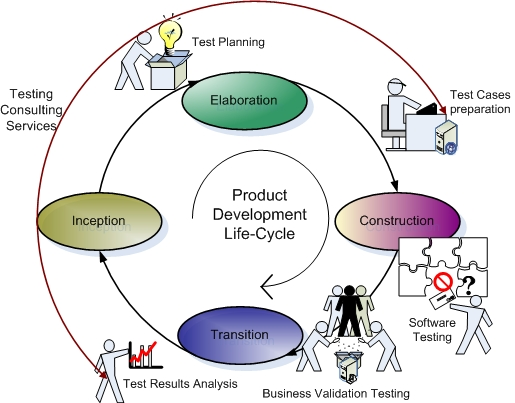

Software Testing:

Software testing is an investigation conducted to provide stakeholders with information about the quality of the product or service under test.Software testing can also provide an objective, independent view of the software to allow the business to appreciate and understand the risks of software implementation. Test techniques include, but are not limited to, the process of executing a program or application with the intent of finding software bugs (errors or other defects).
Software testing can be stated as the process of validating and verifying that a software program/application/product:
meets the requirements that guided its design and development;
works as expected; and
can be implemented with the same characteristics.
Software testing, depending on the testing method employed, can be implemented at any time in the development process.
However, most of the test effort occurs after the requirements have been defined and the coding process has been completed. As such, the methodology of the test is governed by the software development methodology adopted.
Different software development models will focus the test effort at different points in the development process. Newer development models, such as Agile, often employ test driven development and place an increased portion of the testing in the hands of the developer, before it reaches a formal team of testers. In a more traditional model, most of the test execution occurs after the requirements have been defined and the coding process has been completed.
Testing can be done in different levels:
1.Unit Testing:
Tests the minimal software component or module. Each unit or module is checked whether it is functioning well independently or not?
2.Integration Testing:
Exposes defects in the interfaces and interation between integrated components or modules. mal software component or module
3.System Testing:
Tests the system as a whole. Checks whether the completely integrated system meets its requirements or not?
4.Alpha Testing (Before Product Release):
Tests the software by potential end users or customers or an independent test team at developers site.
5.Beta Testing (Before Product Release):
Simulated after Alpha testing. The software is released to groups of people outside the programming team. End products are called Beta-versions.